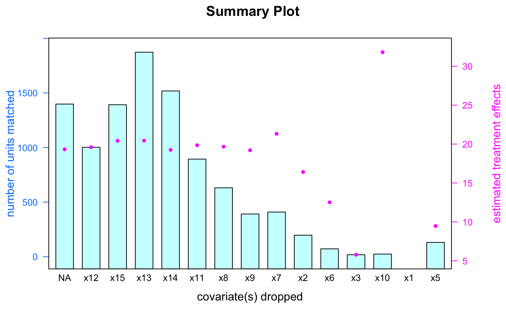

Get Detailed Information After Matching
Jerry Chia-Rui Chang
2018-12-03
CATE.RmdThis vignette demonstrates how to get detailed information such as conditional average treatment effect (CATE), variance, and average treatment effect (ATE) from the FLAME package after matching.
Setup
First, we applied Data_Generation function to generate 1000 treated units and 1000 control units, where U = 5 with 10 important covariates and 5 unimportant covariates. Assume holdout training data is the same as input data. Second, we ran FLAME_bit function for matching, where compute_var is specified to be true.
set.seed(1234)
data <- FLAME::Data_Generation(num_control = 5000, num_treated = 5000,
num_cov_dense = 10, num_cov_unimportant = 5, U = 5)
holdout <- data #Assume holdout training data is the same as input data
result_bit <- FLAME::FLAME_bit(data = data, holdout = holdout, compute_var = FALSE)## number of matched units = 1398## number of matched units = 1002## number of matched units = 1392## number of matched units = 1873## number of matched units = 1518## number of matched units = 894## number of matched units = 631## number of matched units = 391## number of matched units = 409## number of matched units = 197## number of matched units = 72## number of matched units = 18## number of matched units = 24## number of matched units = 0## number of matched units = 131Conditional Average Treatment Effect (CATE)
We can get each matched group’s conditional average treatment effect (CATE) and other related information from functions CATE, MATCH, and CATE_AVG. Let’s use an example when the FLAME algorithm performs matching with 8 covariates at a particular iteration. These 8 covariates are as below.
## [1] "x1" "x2" "x3" "x4" "x5" "x6" "x7" "x10"a.
If we want to see all matched groups at this iteration, apply CATE function to get the summary by providing inputs including (1) object returned by applying the FLAME matching algorithm, and (2) number of covariates used for matching with argument num_covs. Note that if there is no matched group, CATE function will return nothing.
## x1 x2 x3 x4 x5 x6 x7 x10 effect size
## 1 0 0 0 0 0 1 0 0 -0.2217 9
## 2 0 0 0 1 0 0 1 0 1.6640 11
## 3 0 0 0 0 1 0 1 0 1.8027 8
## 4 0 1 0 0 0 0 0 0 1.8442 10
## 5 0 0 0 0 0 0 1 1 3.1416 6
## 6 0 0 0 0 0 0 1 0 4.4867 8Let’s look at one of the matched groups. This matched group has the following covariate combination.
## x1 x2 x3 x4 x5 x6 x7 x10
## "0" "0" "0" "0" "0" "1" "0" "0"b.
If we want to see the conditional average treatment effect, matched size, and variance of this covariate combination, apply CATE function by providing inputs including (1) object returned by applying the FLAME matching algorithm, (2) number of covariates used for matching with argument num_covs, (3) covariate names with argument cov_name, and (4) corresponding covariate values with argument cov_val (Note that covariate values have to be character R data type).
#covariate names
cov_name ## [1] "x1" "x2" "x3" "x4" "x5" "x6" "x7" "x10"#covariate values in character R data type
cov_val ## [1] "0" "0" "0" "0" "0" "1" "0" "0"FLAME::CATE(FLAME_object = result_bit, num_covs = 8, cov_name = cov_name, cov_val = cov_val)## x1 x2 x3 x4 x5 x6 x7 x10 effect size
## 1 0 0 0 0 0 1 0 0 -0.2217 9c.
If we to know which observations/units produce this covariate combination, apply MATCH function with three inputs including (1) object returned by applying the FLAME matching algorithm, (2) covariate names with argument cov_name, and (3) corresponding covariate values with argument cov_val (Note that covariates values have to be character R data type).
FLAME::MATCH(FLAME_object = result_bit, cov_name = cov_name, cov_val = cov_val)## x1 x2 x3 x4 x5 x6 x7 x8 x9 x10 x11 x12 x13 x14 x15 outcome treated index
## 1 0 0 0 0 0 1 0 1 0 0 0 0 0 0 1 -7.307 0 8741
## 2 0 0 0 0 0 1 0 0 0 0 1 1 0 1 1 -7.640 0 8793
## 3 0 0 0 0 0 1 0 0 0 0 1 0 1 1 1 -7.640 0 8803
## 4 0 0 0 0 0 1 0 1 0 0 0 1 1 1 0 -7.307 0 8804
## 5 0 0 0 0 0 1 0 0 1 0 1 0 1 1 1 -7.695 1 8929
## 6 0 0 0 0 0 1 0 0 1 0 1 0 0 0 0 -7.695 1 8934
## 7 0 0 0 0 0 1 0 0 1 0 1 1 1 0 0 -7.695 1 8954
## 8 0 0 0 0 0 1 0 0 1 0 0 1 0 0 0 -7.695 1 8998
## 9 0 0 0 0 0 1 0 0 1 0 0 0 0 0 1 -7.695 1 9080d. Assume we want to see all matched groups containing the covariate combination x1 = 1, x3 = 0, x5 = 1, x7 = 0, x9 = 1. Specifically, even when the FLAME algorithm performs matching with more than 5 covariates, we can still apply CATE function to output all possible matches as long as it contains the specified covariate combination. The input requirements are the same as (b), but num_covs argument does not need to be specified.
CATE_object <- FLAME::CATE(FLAME_object = result_bit,
cov_name = c("x1", "x3", "x5", "x7", "x9"),
cov_val = c("1", "0", "1", "0", "1"))
CATE_object## [[1]]
## x1 x2 x3 x4 x5 x6 x7 x8 x9 x10 x11 x12 x13 x14 x15 effect size
## 168 1 0 0 0 1 0 0 0 1 0 0 1 1 0 1 9.534 2
## 231 1 0 0 0 1 0 0 1 1 0 1 0 0 0 0 11.055 2
## 232 1 0 0 0 1 0 0 1 1 0 1 1 0 1 0 11.055 2
## 233 1 0 0 0 1 0 0 1 1 0 0 0 1 1 0 11.055 2
## 234 1 0 0 0 1 0 0 1 1 0 1 1 0 1 1 11.055 2
## 289 1 0 0 0 1 1 0 0 1 1 0 1 0 0 0 12.350 2
## 290 1 0 0 0 1 1 0 0 1 1 1 0 0 1 1 12.350 3
## 291 1 0 0 0 1 1 0 0 1 1 0 0 1 1 1 12.350 2
## 296 1 0 0 0 1 0 0 1 1 1 0 0 0 1 1 12.424 2
## 300 1 0 0 0 1 1 0 1 1 0 0 0 0 1 1 12.502 2
## 363 1 0 0 1 1 0 0 0 1 0 1 1 0 0 1 20.828 2
## 413 1 0 0 1 1 1 0 0 1 0 0 0 1 0 0 22.275 2
## 414 1 0 0 1 1 1 0 0 1 0 0 1 1 0 0 22.275 2
## 431 1 1 0 0 1 1 0 0 1 0 0 0 0 1 0 22.473 2
## 432 1 1 0 0 1 0 0 1 1 0 0 0 0 0 0 22.547 2
## 433 1 1 0 0 1 0 0 1 1 0 1 1 0 0 1 22.547 2
## 480 1 0 0 1 1 0 0 1 1 1 0 1 1 0 0 23.718 2
## 481 1 0 0 1 1 0 0 1 1 1 1 0 1 0 1 23.718 2
## 493 1 0 0 1 1 1 0 1 1 0 1 1 1 0 1 23.796 2
## 499 1 1 0 0 1 1 0 0 1 1 0 1 0 1 0 23.841 3
## 582 1 1 0 1 1 0 0 1 1 0 1 0 0 0 0 38.841 2
## 605 1 1 0 1 1 0 0 1 1 1 1 1 0 1 0 40.209 2
## 609 1 1 0 1 1 1 0 1 1 0 1 0 1 1 1 40.287 2
##
## [[2]]
## x1 x2 x3 x4 x5 x6 x7 x8 x9 x10 x11 x13 x14 x15 effect size
## 137 1 0 0 0 1 0 0 0 1 1 1 0 1 0 10.90 3
## 142 1 0 0 0 1 1 0 0 1 0 1 0 0 1 10.98 2
## 146 1 0 0 0 1 0 0 1 1 0 0 0 0 0 11.05 2
## 193 1 0 0 0 1 1 0 1 1 0 1 1 1 1 12.50 2
## 281 1 0 0 1 1 0 0 0 1 1 1 0 1 1 22.20 2
## 297 1 0 0 1 1 0 0 1 1 0 1 1 0 1 22.35 2
## 298 1 0 0 1 1 0 0 1 1 0 1 1 1 1 22.35 2
## 302 1 1 0 0 1 1 0 0 1 0 1 0 0 0 22.47 2
## 303 1 1 0 0 1 1 0 0 1 0 1 1 1 1 22.47 2
## 348 1 0 0 1 1 1 0 1 1 0 0 0 1 0 23.80 2
## 349 1 0 0 1 1 1 0 1 1 0 0 1 1 1 23.80 3
## 395 1 1 0 1 1 0 0 0 1 0 1 0 1 0 37.32 2
## 396 1 1 0 1 1 0 0 0 1 0 1 1 1 0 37.32 2
## 433 1 1 0 1 1 1 0 1 1 0 1 0 1 1 40.29 3
##
## [[3]]
## x1 x2 x3 x4 x5 x6 x7 x8 x9 x10 x11 x13 x14 effect size
## 124 1 0 0 0 1 0 0 0 1 0 1 1 1 9.534 2
## 181 1 0 0 0 1 1 0 0 1 0 1 1 1 10.981 2
## 183 1 0 0 0 1 0 0 1 1 0 1 1 0 11.055 2
## 184 1 0 0 0 1 0 0 1 1 0 0 0 1 11.055 2
## 185 1 0 0 0 1 0 0 1 1 0 1 1 1 11.055 3
## 236 1 0 0 0 1 0 0 1 1 1 1 0 0 12.424 2
## 246 1 0 0 0 1 1 0 1 1 0 0 1 1 12.502 2
## 275 1 0 0 0 1 1 0 1 1 1 1 0 1 13.870 2
## 276 1 0 0 0 1 1 0 1 1 1 1 1 1 13.870 3
## 309 1 0 0 1 1 0 0 0 1 0 1 1 1 20.828 3
## 358 1 0 0 1 1 1 0 0 1 0 0 0 0 22.275 2
## 366 1 0 0 1 1 0 0 1 1 0 0 1 0 22.349 2
## 373 1 1 0 0 1 0 0 0 1 1 1 0 0 22.394 2
## 378 1 1 0 0 1 0 0 1 1 0 0 1 1 22.547 5
## 379 1 1 0 0 1 0 0 1 1 0 1 0 0 22.547 2
## 413 1 0 0 1 1 1 0 0 1 1 0 0 1 23.644 3
## 432 1 0 0 1 1 1 0 1 1 0 1 0 0 23.796 2
## 499 1 1 0 1 1 0 0 0 1 0 0 1 0 37.320 2
## 560 1 1 0 1 1 1 0 0 1 1 1 1 0 40.135 2
## 579 1 1 0 1 1 1 0 1 1 1 1 1 0 41.656 2
##
## [[4]]
## x1 x2 x3 x4 x5 x6 x7 x8 x9 x10 x11 x14 effect size
## 216 1 0 0 0 1 0 0 0 1 1 1 0 10.90 2
## 278 1 0 0 0 1 1 0 0 1 1 0 1 12.35 3
## 291 1 0 0 0 1 1 0 1 1 0 0 0 12.50 5
## 323 1 0 0 0 1 1 0 1 1 1 1 0 13.87 2
## 324 1 0 0 0 1 1 0 1 1 1 0 1 13.87 2
## 431 1 0 0 1 1 1 0 0 1 0 1 1 22.27 2
## 450 1 1 0 0 1 1 0 0 1 0 0 1 22.47 2
## 451 1 1 0 0 1 0 0 1 1 0 0 0 22.55 2
## 497 1 0 0 1 1 0 0 1 1 1 1 0 23.72 2
## 498 1 0 0 1 1 0 0 1 1 1 1 1 23.72 2
## 509 1 0 0 1 1 1 0 1 1 0 0 0 23.80 3
## 515 1 1 0 0 1 1 0 0 1 1 0 1 23.84 3
## 517 1 1 0 0 1 0 0 1 1 1 1 1 23.92 4
## 549 1 1 0 0 1 1 0 1 1 1 0 0 25.36 3
## 607 1 1 0 1 1 0 0 0 1 1 1 0 38.69 3
## 608 1 1 0 1 1 0 0 0 1 1 0 1 38.69 4
## 611 1 1 0 1 1 0 0 1 1 0 0 0 38.84 3
## 612 1 1 0 1 1 0 0 1 1 0 1 0 38.84 3
## 637 1 1 0 1 1 0 0 1 1 1 0 1 40.21 3
## 643 1 1 0 1 1 1 0 1 1 0 0 0 40.29 2
## 669 1 1 0 1 1 1 0 1 1 1 0 0 41.66 3
##
## [[5]]
## x1 x2 x3 x4 x5 x6 x7 x8 x9 x10 x11 effect size
## 158 1 0 0 0 1 0 0 0 1 1 0 10.90 3
## 168 1 0 0 0 1 1 0 0 1 0 1 10.98 2
## 282 1 0 0 1 1 1 0 0 1 0 0 22.27 3
## 294 1 1 0 0 1 0 0 0 1 1 0 22.39 2
## 336 1 0 0 1 1 0 0 1 1 1 0 23.72 3
## 346 1 0 0 1 1 1 0 1 1 0 1 23.80 3
## 380 1 1 0 0 1 1 0 1 1 1 1 25.36 6
## 392 1 1 0 1 1 0 0 0 1 0 0 37.32 3
## 436 1 1 0 1 1 1 0 0 1 1 0 40.14 4
## 441 1 1 0 1 1 1 0 1 1 0 1 40.29 2
##
## [[6]]
## x1 x2 x3 x4 x5 x6 x7 x8 x9 x10 effect size
## 123 1 1 0 0 1 0 0 0 1 0 21.03 5
## 139 1 0 0 1 1 0 0 1 1 0 22.35 6
## 155 1 0 0 1 1 1 0 1 1 1 25.16 4
## 176 1 1 0 1 1 0 0 0 1 1 38.69 2
## 177 1 1 0 1 1 1 0 0 1 0 38.77 11
## 179 1 1 0 1 1 0 0 1 1 0 38.84 5
##
## [[7]]
## x1 x2 x3 x4 x5 x6 x7 x9 x10 effect size
## 33 1 0 0 0 1 0 0 1 0 11.39 6
## 48 1 0 0 0 1 1 0 1 0 12.84 7
## 56 1 0 0 0 1 1 0 1 1 14.20 5
## 73 1 1 0 0 1 0 0 1 1 22.06 6e.
We can compute estimated treatment effects of all matched groups in (d) with AVG_EFFECT function. Note that estimated treatment effect is the weighted average of CATEs, with weight being the number of units in each matched group. In addition, we can visualize the distribution of all CATEs in boxplot by applying CATE_plot function.
# Estimated treatment effects
FLAME::AVG_EFFECT(CATE_object) ## [1] 23.49FLAME::CATE_plot(CATE_object)
Average Treatment Effect (ATE) and Summary Visualization
We can compute average treatment effect for each given sub-population by a weighted average of the estimated treatment effects in each matched group. The weight is the number of units in each matched group.
FLAME::ATE(result_bit)## [1] 19.62Apply summary_plot function to visualize the process of matching as the algorithm drops covariate iteratively. The x-axis is the covariate dropped at each iteration. The y-axis on the left is the number of units matched, and the y-axis on the right is the estimated treatment effects. Note that since all covariates are used for matching in the beginning, no covariate is dropped and is represented by NA in the covariate dropped axis.
FLAME::summary_plot(result_bit)